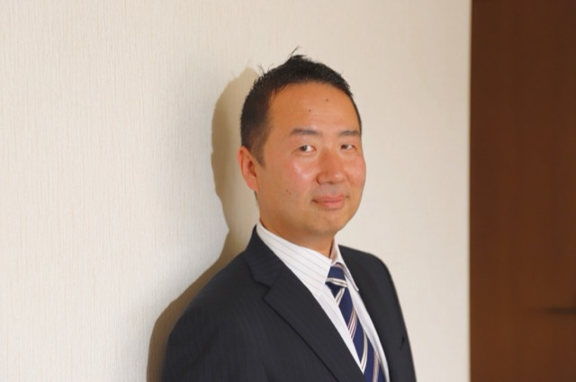
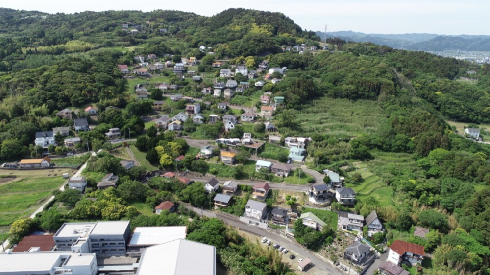
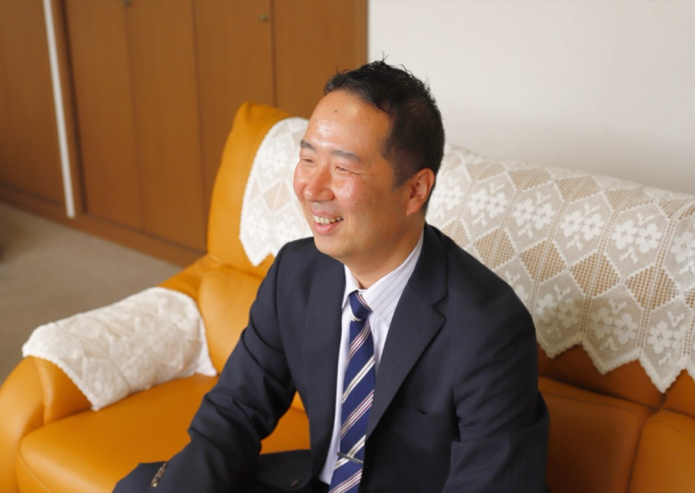
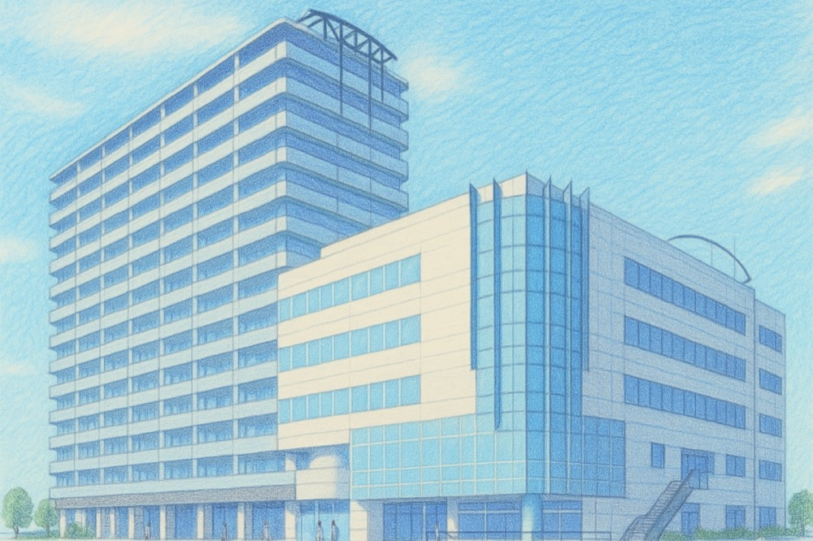
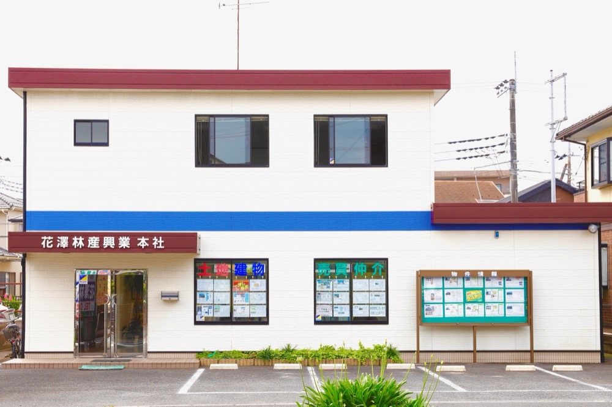

5代続くあすみが丘の老舗不動産
花澤 直輝Naoki Hanazawa
花澤林産興業株式会社 代表取締役
2005年、日本大学大学院理工学研究科海洋建築工学専攻修士課程卒。2005年、東急不動産株式会社入社。2012年、花澤林産興業株式会社入社。2016年、花澤林産興業株式会社専務取締役就任。2018年、花澤林産興業株式会社代表取締役就任。宅地建物取引士、2級土木施工管理技士、管理業務主任者、賃貸不動産経営管理士の資格をそれぞれ取得している。
企業サイトを見るTRACK 01
5代続くあすみが丘の老舗不動産

千葉市緑区に位置するニュータウン、あすみが丘。高層マンションや大規模公園をはじめ、あすみが丘ブランニューモール、果ては日本人画家の写実画をメインに展示しているホキ美術館が存在している、大規模開発都市だ。地区に隣接しているJR土気駅には外房線が通っており、都心部へのアクセスも良好。まさに理想的なベッドタウンと言っても過言ではない。
花澤林産興業株式会社は、土気駅からほど近い地に拠点を構えるあすみが丘を中心とした千葉全域の不動産の売買・賃貸の仲介を手掛ける不動産会社だ。創業当初は名前の通り木材の製材などにも携わっていたが、現在は不動産業のほか自社ビルのテナント経営、太陽光発電による売電事業も手掛けている。
花澤代表で5代目となる花澤林産興業株式会社。一体この会社は、どのような思いで地元に関わってきたのだろうか。
TRACK 02
先代の思いを胸に取り組んだ土地開発計画

創業当初は現在の本社と異なる場所で木材の製材などにも携わっていたが、不動産業中心になってからは土気を活動の拠点としている。近隣住民からの認知も高く、古くから周辺地域の相場感にも精通している点に不動産業界としての強みがある。また、稲毛海岸から鴨川までビルや別荘地などの管理物件を有しており、管理会社と連携して現地管理を行うことで安定的な物件運用を行っている。
名前の通り当初は土気地域を中心に林業と建築業を行っていた。そして当時から所有していた山林などの不動産を、時代の変化と共に売買・交換などを経て不動産業へシフトしていき、現在の業態となっている。
大きな転機となったのが1980年代からはじまった土地区画整理事業だった。花澤林産興業株式会社はこの事業において、あすみが丘及びあすみが丘東地区における土地区画整理組合の一員として、長年携わってきたのだ。その際、街づくりのノウハウや地権者との交渉過程など、特別な経験を数多く積むことができたという。


TRACK 03
事業を続ける秘訣は「人のつながり」を大切にすること
現在の主な業務は稼働中の物件の総点検。修繕必要箇所などを洗い出して順次必要な対応をしているという。長年使用している物件もあるものの、耐用年数を越えている箇所は交換して長寿命化させ、継続的に使用・収益化出来るよう日々メンテナンスしている。昨今のゲリラ豪雨などの異常気象や、大規模地震などの想定外の災害にも対応できるよう事前に備えるようにもしているという。
当時代表取締役をしていた父から引き継ぐ形で入社した花澤代表。当時働いていた会社で続けていくか悩んだという。しかし、代々続いてきたこの会社を失くしてしまうのは絶対にもったいないことだと思い、先代達に恥じぬよう、より良い会社に出来るよう頑張っていくことを目指し、引き継ぐことを決意した。
「自分が生まれ育った地域で、長く経営している会社として地域に愛されていることを少なからず誇りに思います。長いからこその認知度や、昔からの仲間とのつながりが会社を助けてくれることもあり、恵まれた環境だと感じています。商工会や法人会といった集まりでも地元の仲間がいることで安心できますね。」と語る花澤代表。学生時代に本格的に始めたゴルフから交友関係を深めたりと、人とのつながりを誰よりも大切にしている。